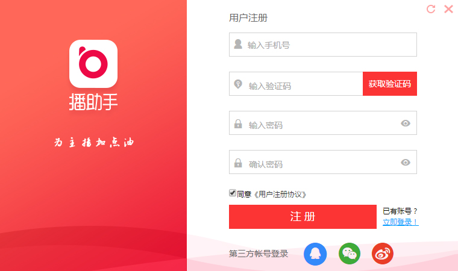
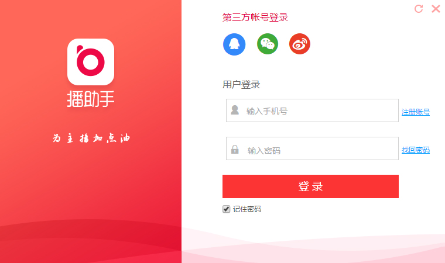
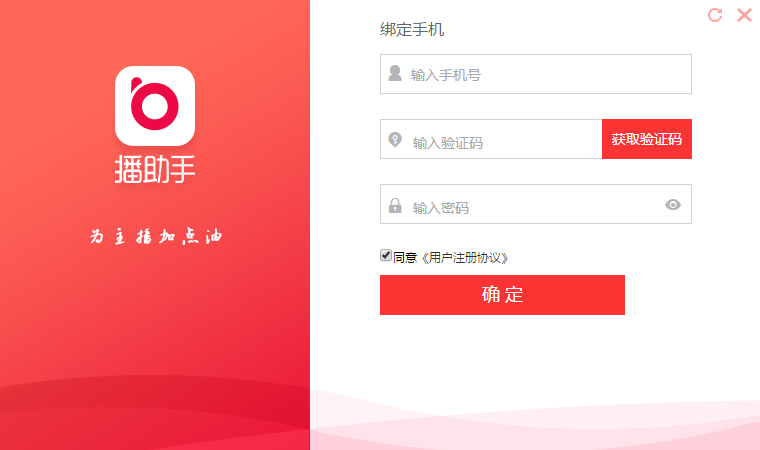

1 双击桌面快捷方式运行播助手客户端，在注册登录页面点击“注册账号”，进入账号注册页面；
2 在账号注册界面中输入主播的手机号码，点击获取验证码并输入，设置输入主播要设置的密码并在确认密码栏再次输入，确认无误后点击“注册”按钮完成注册；
3 注册成功后直接登陆系统进入模板选择界面；

1 账号密码登陆
在账号密码输入框中输入已经注册过的手机号码和密码，点击“登陆”按钮，登陆成功页面进入模板选择界面；

2 第三方账号登陆
主播想使用第三方账号登陆时，点击想使用的三方账号“QQ/微信/微博”图标进行登陆授权，登陆三方账号并授权后进入播助手账号绑定界面，首次使用三方登录需要绑定播助手账号。若主播已经注册播助手，则输入已注册账号点击确定即可，再次点击三方登录时可以直接登陆；若主播没有播助手账号，在此页面可直接进行注册，输入手机号码和密码点击确定即可注册和绑定成功。
